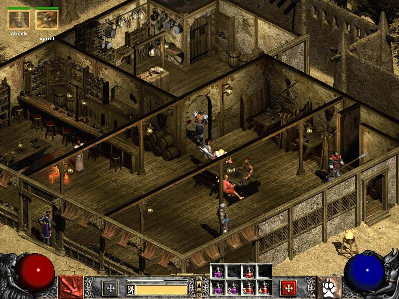

Emparentados con los de aventura, los videojuegos de rol, o RPG, se caracterizan por la interacción con el personaje, una historia profunda y una evolución del personaje a medida que la historia avanza. Para lograr la evolución generalmente se hace que el jugador se enfrasque en una aventura donde irá conociendo nuevos personajes, explorando el mundo para ir juntando armas, experiencia, aliados e incluso magia. Es habitual, desde la aparición del CD-ROM, la inclusión de videos (cinemáticas) durante el juego, que complementan la narración de la historia y hacen que el jugador se sienta como dentro de una película. Aunque la mayoría de juegos de aventura incluyen una dosis baja de RPG, los videojuegos de rol puros se enfocan específicamente en ir agrandando las habilidades y experiencia del protagonista, y en su alto grado de personalización. Por ejemplo en juegos como la saga The Elder Scrolls, el crear y personalizar el personaje que vamos a manejar puede llevar desde 10 minutos hasta 30 horas. Los RPG clásicos, inspirados en los juegos de tablero, realizan las batallas por turnos, es decir, el jugador usa su equipo y habilidades aprendidas para atacar mediante una serie de comandos y después debe quedar estático y esperar a recibir el ataque del otro jugador o CPU. El mejor ejemplo de esto es Final Fantasy, Dungeons & Dragons y Pokémon. Esta modalidad por turnos ha caído sin embargo en desuso, y la mayoría de los juegos de rol actuales usan el combate en tiempo real, es decir, no hay pausas y ambos rivales se atacan al mismo tiempo. En cuanto a la temática, aunque la mayoría de juegos de rol son de fantasía medieval, son numerosos también los de ambientación futurista o distópica (por ejemplo los de la saga de Star Wars, Mass Effect o Fallout).
El género comenzó a mediados de los años 70, inspirado por juegos de rol de mesa como Dungeons & Dragons, publicado en 1974 por la editorial TSR, Inc. Otras fuentes de inspiración para los primeros videojuegos de rol fueron videojuegos de deportes, videojuegos de aventura, juegos de estrategia como el ajedrez, novelas de fantasía de autores como J. R. R. Tolkien e incluso antiguas epopeyas que seguían la misma estructura básica de emprender varias misiones para lograr un objetivo final. Tras el éxito de algunos ejemplares de este género como Dragon Quest y Final Fantasy, el género se ramificó en dos estilos, los JRPG y WRPG, juegos de rol japoneses y juegos de rol occidentales respectivamente. Además, mientras que los primeros videojuegos de rol eran para un único jugador, la popularidad de los modos multijugador se incrementó durante la década de los 90, con videojuegos de rol de acción como Secret of Mana y Diablo. Con la llegada de Internet, muchos juegos multijugador han crecido para convertirse en juegos de rol masivos en línea, por ejemplo Lineage, "World of Warcraft", Final Fantasy XI o Ragnarok Online. Actualmente, predomina la propuesta de videojuego donde se controla y representa cabalmente a un personaje (o varios), que debe cumplir con una serie de objetivos o misiones bien establecidos por los programadores; usualmente, se crea un mundo perteneciente a un tema de fantasía épica. Para ello, se viene utilizando una interfaz gráfica cada vez más vistosa para utilizar un sofisticado inventario de poderes humanos y sobrenaturales (que el jugador desarrolla poco a poco con práctica y muchas horas de juego), recursos monetarios y objetos diversos en propiedad (comprados o encontrados de manera fortuita), para el logro de las metas.
El subgénero más popular es el RPG de Acción; habitualmente, los juegos de Acción RPG permiten controlar un único personaje en tiempo real, y suelen estar muy centrados en el combate y la acción, con la trama y la interacción de personajes mantenida al mínimo. Los juegos RPG de acción tempranos tendían a seguir la plantilla establecida en 1980 por juegos como Dragon Slayer y la saga Ys, que se caracterizan por un combate hack and slash, donde las acciones del personaje son controladas directamente, usando un teclado o un controlador de juego, en lugar de usar menús. Esta plantilla fue refinada por el juego de acción aventuras, The Legend of Zelda (1986), que estableció una fórmula que fue usada por muchos RPG de acción que se desarrollarían después, incluyendo innovaciones como un mundo abierto, jugabilidad no lineal y un botón de ataque que animaba el lanzamiento de un proyectil o un arco de espada. Este juego fue responsable del surgimiento un gran número de RPG de acción, lanzados desde finales de los 80, tanto en Japón como en Norte América. La saga The Legend of Zelda seguiría siendo una gran influencia en la transición tanto en consola como en ordenador de los RPG basados en turnos y con gran número de recursos estadísticos hacia los más orientados a la acción. Otra variante de la fórmula de los RPG de acción fue popularizada por el videojuego Diablo (1996), donde la mayoría de los comandos, como moverse y atacar, son ejecutados mediante clics de ratón en lugar de menús (a pesar de que algunos hechizos pueden asignarse a teclas). En muchos RPG de acción, los personajes no jugadores o NPC sirven a un único propósito, ya sea el de comprar o vender objetos, mejorar las habilidades del jugador o darle misiones centradas en combates. Los problemas que los jugadores afrontan suelen tener también soluciones basadas en la acción, por ejemplo, romper una puerta de madera con un hacha en lugar de encontrar una llave, aunque otros juegos ponen énfasis en otras habilidades de personajes como podría ser la de usar ganzúas para abrir estas puertas. Un desafío habitual a la hora de desarrollar RPGs de acción es el de incluir contenido más allá de matar enemigos. Con la escasez de objetos, localizaciones y monstruos encontrada en muchos de estos juegos, puede ser difícil crear la profundidad necesaria para ofrecer a los jugadores una experiencia única adaptada a sus creencias, gustos o acciones. Este desafío es aun mayor si el juego hace uso de la aleatorización, como es común. Un ejemplo de un juego que fue más allá de esto es Deus Ex (2000) que ofrecía múltiples soluciones a los problemas usando opciones de historia intrincadamente relacionadas y entornos construidos individualmente. En lugar de simplemente abrirse paso entre los niveles, los jugadores eran desafiados a ponerse en lugar de su personaje escogiendo apropiadamente opciones de diálogo y usando el entorno que los rodeaba de forma inteligente. Esto ofrecía una experiencia que era única para cada situación en contraste a una que se repitiera en todas. Los RPG de acción eran mucho más comunes en consolas que en ordenadores. A pesar de haber numerosos intentos de crear RPG de ordenador orientados a la acción durante los 80 y los 90, a menudo basándose en Zelda, muy pocos tuvieron algún éxito, con el videojuego lanzado en 1992 Ultima VII siendo uno de los más notables ejemplos en Norte América. En el PC, el efecto de Diablo en el mercado fue muy significativo en el mercado de los años 90. Tuvo muchos imitadores y su estilo de combate fue usado por juegos que vinieron después. En los años posteriores los juegos que imitaban la fórmula de Diablo fueron referidos como "Clones de Diablo".